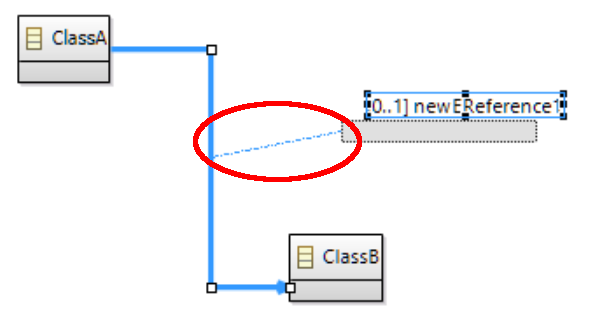

Summary: When a label of edge is moved, a feedback link is displayed between the label and its edge. The goal of this feature is to display this link as soon as the edge or label is selected.
| Version | Status | Date | Authors | Changes |
|---|---|---|---|---|
| v0.1 | DRAFT | 2016-08-09 | lredor | Initial version. |
| v0.2 | PROPOSAL | 2016-08-17 | lredor | Reviewed version. |
Relevant tickets:
When a label of edge is moved, a feedback link is displayed between the label and its edge, like on this screenshot:

The goal of this feature is to allow the user to display this link as soon as the edge or one of the labels of this edge is selected. This feature can be activated with a new preference in
Sirius/Sirius Diagram/Connections.
By default, the preference will be disabled (same default behavior as previous Sirius version).
If the edge has several labels, one link will be displayed for each label.
If a label is selected, only the link for this label is displayed.
No metamodel change.
A new preference will be added in
org.eclipse.sirius.diagram.ui.tools.api.preferences.SiriusDiagramUiPreferencesKeys.
A new preference is available in Sirius/Sirius Diagram/Connections to activate this new feature.
This new feature will be documented in the user guide and mentioned in the release notes.